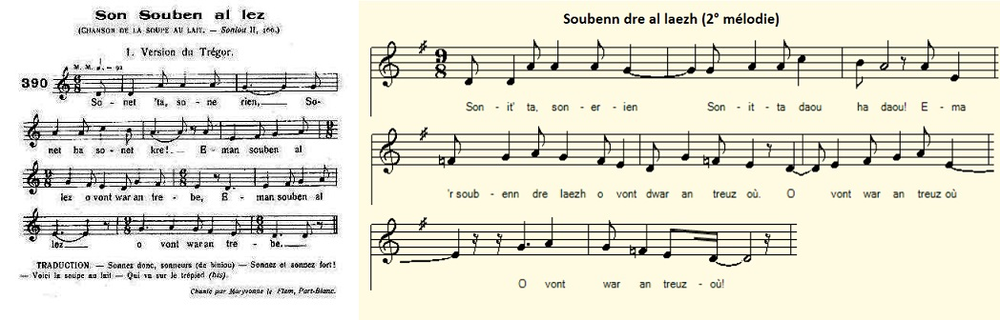
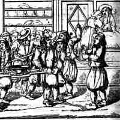

Soubenn al laezh
La soupe au lait
The Milk and Bread Soup
Chant tiré du 2ème Carnet de collecte de La Villemarqué (p. 221 / 132)
Mélodie 1
Mélodie 2
Arrangement Christian Souchon (c) 2015
|
A propos de la mélodie Mélodie 1: Extrait de "Sonioù Feiz ha Breiz" publié vers 1930, repris de "Mélodies populaires de Basse-Bretagne", recueil de Bourgault-Ducoudray paru vers 1885 Chanson chantée le soir d'un mariage (cf. "La ceinture de noce" du "Barzhaz Breizh") Mélodie 2: Tirée du recueil de Maurice Duhamel (1900). Le site "Tob.kan;bzh" donne 9 autres mélodies. A propos du texte Voici comment le site "Tob.kan;bzh" (https://tob.kan.bzh/chant-00481.html), consacré à la classification Malrieu, présente ce chant: "Caractéristiques du chant Référence : M-00481 Titre critique breton : Soubenn al laezh Titre critique français : La soupe au lait Résumé : Nous sommes venus consoler le cœur d’une jeune fille, la première nuit de ses noces. Sonnez, sonneurs, sonnez, la soupe au lait passe sur le pas de la porte. Sonnez, elle monte sur le trépied. Sonnez, elle monte sur le banc.Levez-vous, jeunes gens, goûter la soupe. Le premier morceau, pour la Vierge Marie, le deuxième pour votre époux et vous, le troisième pour votre père et mère... Le jeune marié fâché se retourne vers la planche. Quand sera fini le dîner, soufflée la chandelle, alors les deux époux se réjouiront tous deux. Sonnez, sonneurs, sonnez joyeusement. Il est temps de nous retirer et laisser les deux époux dormir dans leur amour. Thèmes : Cycle du mariage, la vie de couple. Versions: 28 versions et 40 occurrences: - Bourgault-Ducoudray, "30 mélodies populaires de Basse-Bretagne", 3 occurrences, 1885, 1931 - Bourgeois Albert, "Kanaouenoù pobl", 1 version, 1 occurrence, avant 1904 - Bourgès A., "Chez les moines rouges de Pont-Melvez", 1951 , 1 versions, 1 occurrence - Cadic François (Abbé), "Paroisse bretonne de Paris", février 1905, 2 versions, 4 occurrences - Duhamel Maurice et Herrieu Loeiz, "Chansons de France",1907; "Guerzenneu ha sonneneu Bro-Guened", 1911-1930, 1 version, 3 occurrences. -Herrieu Loeiz, "Dinuhamb", 1912, 1 version, 1 occurrence. -Duhamel Maurice, "Muiques bretonnes", 1913 , 1 version, 1 occurrence, etc... La liste continue avec François Vallée, Yves Le Diberder, Jean-Marie de Penguern, François-Marie Luzel, Ifig Le Troadec, Yann-Fañch Kemener et d'autres. Il faut désormais y ajouter la version collectée par La Villemarqué avant 1845, date de parution de la 2ème édition du Barzhaz. En effet les 2 premières strophes du chant manuscrit sont reprises, presque à l'identique dans la strophe 17 de La ceinture de noces. |
About the melody Tune 1: From "Sonioù Feiz ha Breiz" published around 1930, taken from "Mélodies populaire de Basse-Bretagne", a song collection by Bourgault-Ducoudray published around 1885 Song to be sung on the evening of a wedding (cf. "The wedding belt" in "Barzhaz Breizh" ) Tune 2: From the collection of Maurice Duhamel (1900). The site "Tob.kan; bzh" gives 9 other tunes for this song. About the lyrics Here is how the site "Tob.kan; bzh" (https://tob.kan.bzh/chant-00481.html), devoted to the Malrieu song classification, presents this piece: "Main features: Reference: M-00481 Breton critical title: "Soubenn al laezh" English critical title:"The bread and milk wedding soup Summary: We have come to console the bride's heart on the first wedding night. Pipers play your instruments, the milk soup is passing on the doorstep. Play again, it is laid onto the tripod. Play again it is carried onto the bed-bench. Get up, young men, and taste the soup. The first ladleful will be for the Virgin Mary, the second for your husband and you, the third for your father and mother ... The angry bridegroom turns to the wall. When dinner is over, the candle is blown out, then both spouses will be left to enjoy solitude. Play, pipers, play joyfully. It's time to step aside and let both spouses sleep peacefully. Topics: Marriage cycle, couple life. Versions: 28 versions and 40 occurrences: - Bourgault-Ducoudray, "30 popular melodies from Lower Brittany", 3 occurrences, 1885, 1931 - Bourgeois Albert, "Kanaouenoù pobl", 1 version, 1 occurrence, before 1904 - Bourgès A., "Chez les moines rouges de Pont-Melvez", 1951, 1 versions, 1 occurrence - Cadic François (Abbé), "Breton Parish of Paris", February 1905, 2 versions, 4 occurrences - Duhamel Maurice and Herrieu Loeiz, "Chansons de France", 1907; "Guerzenneu ha sonneneu Bro-Guened", 1911-1930, 1 version, 3 occurrences. -Herrieu Loeiz, "Dinuhamb", 1912, 1 version, 1 occurrence. -Duhamel Maurice, "Muiques bretonnes", 1913, 1 version, 1 occurrence, etc ... The list goes on with François Vallée, Yves Le Diberder, Jean-Marie de Penguern, François-Marie Luzel, Ifig Le Troadec, Yann-Fañch Kemener and others. We must now add to it the version collected by La Villemarqué before 1845, date of publication of the 2nd edition of Barzhaz, as evidenced by the fact that the first 2 stanzas of the handwritten song are copied, almost identically in stanza 17 of The wedding belt . |
Version Bourgaud Ducoudray
|
Sonit-hu, sonerien, sonit munut ha ge Emañ 'r soubenn al laezh o vont war an trebez Sonit-hu, sonerien, sonit munut ha stank Emañ 'r soubenn al laezh o vonet war ar bank Sonit-hu, sonerien, sonit munut ha ge Emañ 'r soubenn al laezh o vont 'barzh ar gwele Kentañ tamm anezhi, kentañ tamm anezhi Kentañ tamm anezhi zo d'ar Werc'hez Vari An eil tamm anezhi, an eil tamm anezhi An eil tamm anezhi zo d'ho pried ha c'hwi 'N trede anezhi zo d'ho tad ha d'ho mamm Oc'h bet maget ganto 'n amzer ma oac'h yaouank P'vare tamm anezhi zo d'ho preur ha d'ho c'hoar Ha da gement hini a zo deoc'h hiziv kar 'R pempvet tamm anehi a zo d'ar vignoned Hoc'h eus darempredet betek deiz hoc'h eured = |
Sonnez, cornemuseux, sonnez menu et gai! Voilà la soupe au lait, posée sur son trépied! Sonnez, cornemuseux, oui, sonnez hardiment! Voilà la soupe au lait, qu'on pose sur le banc! Sonnez, cornemuseux, sonnez fort, je vous dis! Voilà la soupe au lait, qu'on pose sur le lit! La première louchée, la première louchée A la Vierge Marie doit être consacrée! La seconde louchée, la seconde louchée, La seconde louchée, pour vous et l'épousée! La troisième louchée sera pour vos parents, Eux qui vous ont nourris quand vous étiez enfants! La quatrième sera pour vos frère et soeur Et pour ceux qu'en ce jour vous gardez dans vos coeurs. La cinquième louchée sera pour les amis, Fidèles compagnons de route jusqu'ici. Traduction: Ch. Souchon (2009) |
Play, bagpipers, play low but cheerful! Here is the milk soup pot, placed on its tripod! Play, bagpipers, play, low but boldly! Here is the milk soup, which we put on the bench! Play, bagpipers, play low but cheerful Here is the milk soup, which we put on the bed! The first ladleful, the first ladleful Is for the Virgin Mary! The second ladleful, the second ladleful, The second ladleful, for the bride and you! The third ladleful be for your parents, Who fed you when you were children! The fourth will be for your siblings And for those whom you love on this day. The fifth ladleful will be for your friends, Faithful fellow travelers so far. |
Version Carnet 2 collectée par Th. de La Villemarqué
|
p. 221 / 132 Ar soubenn dre laezh d’oc’h an eured 1. Sonit-c'hwi sonerien! Sonit-c'hwi daou ha daou! Ema ‘r soubenn dre laezh o vont war an treuzoù. 2. O sonit sonerien! Sonit-c'hwi tri ha tri! Ema ‘r soubenn dre laezh o vonet barzh an ti, 3. O sonit sonerien, sonit-c'hwi stank ha stank! Ema ‘r soubenn dre laezh o vonet war ar bank; 4. An tañva kentañ 'ne(zh)i zo d’ar Verc'hez Vari An eil tañva ane(zh)i zo d'ho pried ha c’hwi. 5. Deuit-c'hwi, ha deuit-c'hwi holl da dañva ar zoubenn Da c’hoût hag hi zo sall pe 'hend-all disholen! 6. Pe hi zo trempet deoc'h, pe d'holl an ame(z)eien Pe hi so trempet deoc'h ha d'holl an dañserien! 7. Doue da gonsolo, kalon diskonsolet! Kalon ar plac'h yaouank, noz kentañ he eured! = KLT gant Christian Souchon (c) 2020 |
p. 221 / 132 La soupe au lait servie aux jeunes-mariés 1. Joyeux sonneurs, sonnez, deux par deux, oui, sonnez! La soupe au lait arrive. Elle est sur le trépied. 2. Joyeux sonneurs, sonnez et sonnez trois par trois! La soupe au lait franchit le seuil, regardez-la! 3. Joyeux sonneurs, sonnez et de plus en plus fort! Que sur le banc du lit on pose ce trésor! 4. La première à goûter soit la Vierge Marie. Les seconds soient vous-même et l'épouse chérie! 5. A présent, venez tous à la soupe goûter! Dites, vous convient-elle ou faut-il la saler? 6. On l'a trempée pour vous et pour tous les voisins. On l'a trempée pour vous, les danseurs, aussi bien. 7. Que Dieu console tous les coeurs dans l'affliction, Et de celle dont nous inaugurons l'union! = Traduction Christian Souchon (c) 2020 |
p. 221 / 132 The Wedding Bread and Milk Soup 1. Merry pipers, sound your instruments two by two! The milk soup on its three-legged rack's waiting for you. 2. Merry pipers sound your instruments three by three! The milk soup crosses the threshold, the place to be! 3. Merry pipers sound your instruments loud on high! The milk soup's on the bench. Merry pipers, draw nigh! 4. The first to taste the soup be the Virgin Mary. Then yourself and the girl you've chosen to marry! 5. Now then the lot of you may come and taste the soup! Should more salt be added into the holy stoup? 6. Bread was soaked for you all and for all the neighbours. Bread was soaked as well for all the merry dancers 7. May God console all hearts that are in woeful plight And the heart of the girl on her first wedding night ! = |
NOTES
|
[1] Une coutume bizarre: "La nuit de noces était un rite d'initiation auquel la ociété tout entière se devait de participer. La "grillade", la "pannée", la "rôtie" et ar "soubenn [dre] laezh" désignaient, selon les endroits, la soupe des mariés qui donnait à l'assistance un prétexte pour faire irruption dans la chambre nuptiale. Les procédés variaient avec les noms: La rotie était composée de morceaux de pain attachés les uns aux autres par un fil et trempés d ans le vin. La "pannée" était faite de vin chaud sucré et parfumé à la cannelle. Souvent la soupe était servie dans un vase de nuit et l'on exigeait des mariés qu'ils la mangent avec une cuiller percée, ce qui animait joyeusement le spectacle. Par ailleurs, les draps du lit avaient souvent été remplis de miettes de pain ou de crin de cheval. On faisait traîner au grenier, au-dessus de la chambre des époux pour leur faire croire aux revenants. Avec la soupe, on apportait souvent un berceau rempli d'objets hétéroclites servant à faire un charivari sur place. Bref il était rare que le mariage soit consommé la première nuit." ("Almanach de la mémore et des coutumes de la Bretagne" de Claire Thiévant, Hachette) [2] Strophes édifiantes et gauloiseries Cette description de cette coutume contraste avec celle qu'en donne l'Abbé François Cadic dans "La Paroisse bretonne de Paris" de février 1945: "Il faut y voir sans doute le symbole de la douceur et de l'harmonie qui devront régner désormais entre les deux conjoints..." Il parle aussi d'"esprit de famille" et de solidarité entre générations. La version cornouaillaise du chant qu'il donne à la suite d'une version vannetaise se termine par la strophe: N'eo ket a daolioù dorn e vez piket ar maen / Nag a daolioù morzhol e vez desket an den. La strophe correspondante chez Luzel, chantée par un certain Googen au Faou s'énonce comme suit: N'eo ket a daolioù daouarn e vez piket ar maen / Neo ket a daolioù morzhad e vez formet an den. Si l'un et l'autre affirment que "ce n'est pas à coups de poing qu'on pique la pierre", l'abbé a entendu et compris "ce n'est pas à coups de marteau que l'on redresse un homme", tandis que Luzel, le champion de la laïcité républicaine que les gauloiseries n'effarouchent pas, traduit: "Ce n’est pas à coups de cuisse que l’on fabrique l’homme." Il est vrai que sa courte version (5 strophes) ne comporte aucune invocation à la Sainte Vierge (qui se demanderait sinon ce qu'elle vient faire dans cette galère). [3] Question de vocabulaire: A la strophe 6, "Pe hi zo trempet deoc'h" signifie "Qu'elle soit trempée pour vous", ce qui rappelle l'expression "trempé comme une soupe" (= "très mouillé"). Les anciens dictionnaires définissaient la soupe comme un aliment composé de bouillon et de tranches de pain. Le mot est d'origine germanique et parent de l'allemand "saufen" (="boire" en parlant d'un animal). Il s'applique donc en premier lieu à la tranche de pain qui s'imbibe (du latin "bibere"="boire") de bouillon. C'est bien ainsi que le dictionnaire du Père Grégoire traduit le français "soupe" (breton "soubenn" ou "soup"): "pain délié (?) qu'on met dans le potage", suivi d'exemples "couper la soupe" et "tremper la soupe" qui se rapportent aux tranches de pain. Puis viennent d'autres exemples qui ont trait au liquide: "manger sa soupe", "soupe au lait", etc. En dépit de la vénérable origine de cette pratique, certains étrangers sont choqués par le spectacle de nos tartines trempées dans le café au lait... |
 "La soupe au lait", Olivier Perrin, "Breiz Izel" ou "Vie des Bretons de l'Armorique", A. Bouët, 1844 |
[1] A bizarre custom: "The wedding night was a rite of passage in which the whole society was invited to partake. The "grillade" (grilled bread), the "pannée" (slice of bread), the "rôtie" (toast) and the "soubenn [dre] laezh" (milk soup) referred, depending from the place, to a soup served to the bride and groom which gave the audience an excuse to burst into the bridal chamber. The procedures varied as much as the names: The "rôtie" was made up of pieces of bread attached to each other by a thread and soaked in wine. The "bread slices" were soaked into wine sweetened and flavoured with cinnamon. Often the soup was served in a chamber pot and the bride and groom were required to eat it with a pierced spoon, which joyously enlivened the show. In addition, the bed sheets had often been filled with crumbs of bread or horsehair. Iron chains were dragged in the attic, above the couple's bedroom to make them believe this noise was caused by ghosts. They often brought a cradle filled with motley items intended to make hullabaloot. In short, the marriage was seldom consummated the first night. "(" Almanach de la mémore et des coutumes de la Bretagne" by Claire Thiévant, Hachette) [2] Edifying stanzas and bawdy jokes This description of this custom contrasts with the one given by Abbé François Cadic in "La Paroisse bretonne de Paris" of February 1945: "It is undoubtedly the symbol of gentleness and harmony which now should aptly prevail between the two spouses ... " He also speaks of" family spirit "and intergenerational solidarity. The Quimper dialect version of the song which is preceded by a Vannes version ends with the stanza: N'eo ket a daolioù dorn e vez piket ar maen / Nag a daolioù morzhol e vez desket an den. The corresponding stanza in the song collected by Luzel, as sung by a named Googen at Faou reads as follows: N'eo ket a daolioù daouarn e vez piket ar maen / Neo ket a daolioù morzhad e vez formet an den. If both cases it is stated that "it is not by hitting with punches that one may cut stones" . The abbot heard and understood "it's not by hitting with a hammer that you'll straighten a hunchback", while Luzel, the champion of republican secularism whom a bawdy joke does not frighten, translates: "Only by wiggling your thighs you won't shape a human being . " It is true that his short version of the song (5 stanzas) does not mention the Blessed Virgin (who would not feel at ease in such surroundings). [3] A semantic issue : In stanza 6, "Pe hi zo trempet deoc'h" means "Let it be soaked for you", which recalls the expression "soaked like a soup "(=" very wet "). Old dictionaries defined "soup" as cooked food consisting of broth and slices of bread. The word is of Germanic origin and related to the German "saufen" (= "to drink" when speaking of an animal). It therefore applies in the first place to the slice of bread which is soaked with broth. This is how Father Grégoire's dictionary translates the French "soup" (Breton "soubenn" or "soup"): "loaf of bread that we dip into the soup", followed by examples "to cut a soup" and" soup "to dip a soup" which relate to slices of bread. Then other examples are quoted that relate to the liquid: "eat your soup", "milk soup", etc. In spite of the venerable origin of this practice, some foreigners are upset by the sight of a Frenchman soaking a toast in his cup of milk coffee |
Loiza p. 222
Pages 222 à 250: notes diverses
Kersalaün, 2ème version p. 251
Son ar marc'hadour, 2ème version p. 254
* Taolenn ar Sonioù*